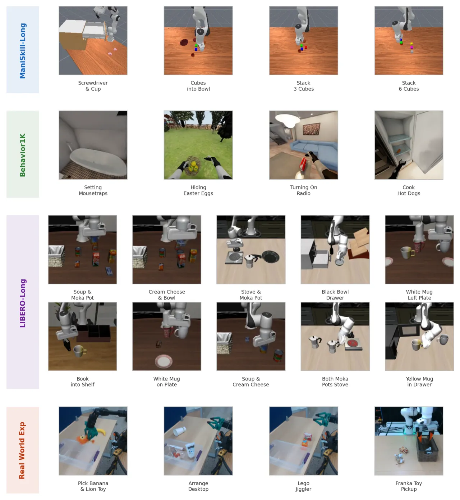
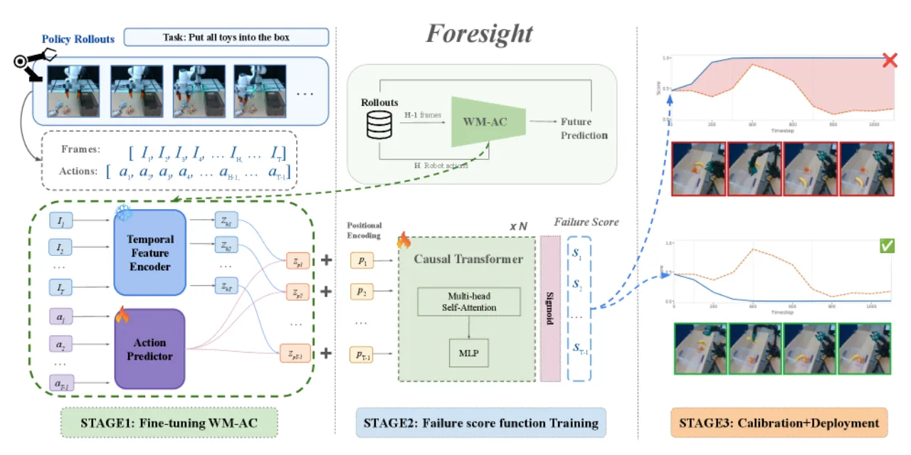
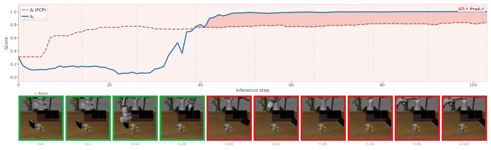
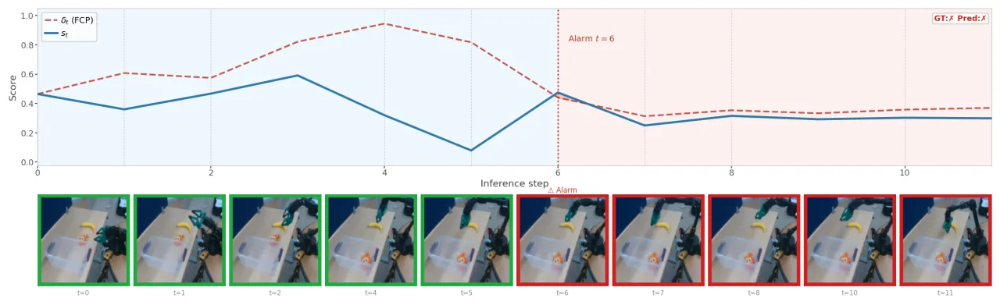

长时程操作里，"失败何时开始"往往说不清，逐帧标注也稀缺。Foresight 用 action-conditioned world model 的隐变量在线监控轨迹，只需任务级成功/失败标签训练，再用 functional conformal prediction 校准出随时间变化的报警阈值——把"当前观测是否仍与动作所隐含的进度一致"变成一条可报警的失败分数曲线。
长时程操作任务往往横跨数百到数千步、包含多个子阶段，失败可能在任意阶段悄然发生。作者指出核心难点在于："the meaning of a visual state depends on the action history and task stage"——同一帧画面在不同动作历史与任务阶段下含义完全不同。仅依赖 policy uncertainty、vision-language 判断或孤立的 anomaly detection，在这种设定下都不够。
Foresight monitors whether observed trajectories remain "consistent with the progress implied by the robot's actions" —— 用动作所隐含的进度作为参照，判断观测轨迹是否"跑偏"。

Foresight 是一个三阶段流水线：先微调 action-conditioned world model 抽取隐变量，再用一个 causal sequence model 把隐变量映射成逐时刻失败分数 st，最后用 functional conformal prediction 校准出时变阈值 δt 并在部署时报警。

以冻结的 V-JEPA 2-AC 作为视觉编码骨干。在每个时刻 t：观测隐变量 zht = Pool(fφ(ct)) 编码当前观测；预测隐变量 zpt = Pool(gψ(zht, At)) 在给定 policy 动作块 At 的条件下编码"预期的未来状态"。二者的一致性正是失败信号的来源。
一个因果序列模型（可选 Transformer / LSTM / MLP）逐 token 处理时序：ut = W·zpt + pt（投影隐变量 + sinusoidal positional encoding），输出逐时刻失败分数 st = Dθ(U≤t) ∈ [0,1]。训练只用任务级成功/失败标签，无需失败发生时刻的逐帧标注。论文称其提供 "a unified framework for failure detection across different policies"。
为每个时刻构造时变阈值 δt = μt + ht：μt 是成功 calibration rollouts 的平均失败分数，ht = q̂·σt 是基于 calibration nonconformity 分数的分位数带宽。当 st ≥ δt 时判为失败，并带有统计意义上的 false-positive-rate 保证。
评测指标：ROC-AUC（把逐时刻分数用 max pooling 聚合）与 Balanced Accuracy=(TPR+TNR)/2。基线包括 FAIL-Detect（无失败数据的 uncertainty/OOD 检测）、SAFE-MLP/LSTM（policy 内部隐变量）、RND（Random Network Distillation）、Gauge（压缩视频世界模型隐变量 + conformal prediction）。
| Benchmark（平均步长） | 最强非 Foresight 基线 | Foresight-Transformer | 指标 |
|---|---|---|---|
| LIBERO-Long（~253 步） | 0.91 ± 0.02（SAFE-LSTM） | 0.89 ± 0.02 | ROC-AUC |
| LIBERO-Long | 0.88 ± 0.02（SAFE-LSTM） | 0.94 ± 0.06 | Bal. Acc |
| ManiSkill-Long（~1484 步） | 0.83 ± 0.02（RND） | 0.84 ± 0.03 | ROC-AUC |
| ManiSkill-Long | 0.68 ± 0.18（RND） | 0.80 ± 0.10 | Bal. Acc |
| BEHAVIOR-1K（~8557 步） | 0.72 ± 0.02（SAFE-LSTM） | 0.76 ± 0.02 | ROC-AUC |
| BEHAVIOR-1K | 0.64 ± 0.05（SAFE-LSTM） | 0.78 ± 0.02 | Bal. Acc |
优势在时程最长的 BEHAVIOR-1K 上最明显：相对最强非 Foresight 基线取得约 +0.14 balanced accuracy、+0.04 ROC-AUC。在 LIBERO-Long 上 ROC-AUC 略低于 SAFE-LSTM（0.89 vs 0.91），但 balanced accuracy 明显更高（0.94 vs 0.88）。

| 平台 / 策略 | ROC-AUC |
|---|---|
| ReactorX-200 · ACT | 0.93 ± 0.01 |
| ReactorX-200 · π0.5 | 0.87 ± 0.03 |
| ReactorX-200 · SmolVLA | 0.79 ± 0.09 |
| Franka（cross-embodiment）· GR00T N1.5 | 0.89 ± 0.10 |
Foresight-Transformer 在 4 个真机设定中的 3 个取得最高 ROC-AUC。

在一个策略上训练、在另一个策略上测试考察迁移能力：训练于 π0-FAST、测试于 OpenVLA（LIBERO-Long），得 ROC-AUC 0.64 ± 0.02、Bal. Acc 0.90 ± 0.01。作者指出迁移是非对称且依赖策略的——π0.5 相比 ACT / SmolVLA 表现出更广的行为覆盖。总体结论："action-conditioned world-model embeddings provide a scalable representation for reliable failure monitoring in long-horizon manipulation."
作者原文："A key limitation is the computational cost and latency of pretrained world models, which makes on-device deployment challenging and may limit applicability to highly reactive or agile tasks requiring fast closed-loop control." 即世界模型推理开销大，难以在设备端部署，也不适合需要快速闭环控制的高反应性/敏捷任务。
FCP 的 false-positive-rate 保证成立的前提是 calibration 分布与部署条件一致；一旦部署环境与校准数据分布偏移，阈值 δt 的统计保证会失效。
由 Table 4 推断：跨策略迁移的 ROC-AUC 可低至 0.64，且迁移方向依赖具体策略对，说明失败检测器一定程度上耦合了被监控策略的行为分布，泛化到未见策略并不 robust。